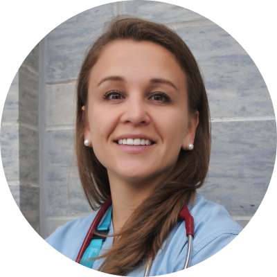

Dr. Olya Keenan
January 15th, 2024
Dear valued patients,
With a heavy heart, I must share with you that the current Prince Edward Medical Clinic will be permanently closing effective April 1, 2024.
This decision was made the same week that I went on maternity leave in late December 2023. Given this unfortunate timing, I do not have the opportunity to relocate to a new office, and must close my practice. My locum physician, Dr. Bellicoso will continue to look after my patients until March 31, 2024.
I am optimistic about opening a new medical practice in 2025 once I return from maternity leave, at a new location in Etobicoke. For those of you who wish to receive updates regarding my future practice plans, I have created an e-mailing list. Please take a moment to sign up to receive updates using the form
I recognize that changing physicians may be stressful and challenging. Please see the “Frequently Asked Questions” sheet included with tips on finding a new family physician. Given the closure of Prince Edward Medical, there will not be any opportunity for my colleagues to take over the care of my patients. The other physicians will notify their patients as soon as their plans are finalized.
I have absolute confidence that Records Management Ltd. will ensure the security and privacy of your medical history. As I am NOT going to be involved in the record duplication and payment process, please contact Records Management Ltd directly by phone at 1-800-775-0093, or find them online at www.recordsregistry.ca. Finally, I refer you to the enclosed "Frequently Asked Questions" sheet for additional logistical details.
Thank you once again for allowing me to be a part of your healthcare journey. Whether you have been with me since I opened my office in 2017, or joined my practice more recently, I have truly enjoyed the privilege of getting to know you. I will remember all of you with fond memories.
I extend my best wishes to you for success, good health, and happiness and I hope that our paths may cross again in the future.
Warm regards,

With a heavy heart, I must share with you that the current Prince Edward Medical Clinic will be permanently closing effective April 1, 2024.
This decision was made the same week that I went on maternity leave in late December 2023. Given this unfortunate timing, I do not have the opportunity to relocate to a new office, and must close my practice. My locum physician, Dr. Bellicoso will continue to look after my patients until March 31, 2024.
I am optimistic about opening a new medical practice in 2025 once I return from maternity leave, at a new location in Etobicoke. For those of you who wish to receive updates regarding my future practice plans, I have created an e-mailing list. Please take a moment to sign up to receive updates using the form
Leave your email so I can keep you up to date.
I will only email you once I know where and when my new practice will be set up.
Stay up to date
Continuity of Care
As my office will be closed as of April 1, 2024, it is preferable that you do not complete any requisitions or tests ordered by myself or my Prince Edward Medical colleagues after April 1, 2024 as I will not have the opportunity to review the results with you. Please ask your new physician, or a walk-in clinic physician, for a new requisition or test referral. If you do complete a test that was ordered via Prince Edward Medical, the results will need to be reviewed with your new family doctor or a walk in clinic. I recognize that changing physicians may be stressful and challenging. Please see the “Frequently Asked Questions” sheet included with tips on finding a new family physician. Given the closure of Prince Edward Medical, there will not be any opportunity for my colleagues to take over the care of my patients. The other physicians will notify their patients as soon as their plans are finalized.
Your Medical Records
I have made arrangements with Records Management Ltd for the storage and management of my patient charts.They will provide you or your new family physician with an electronic or paper copy of your file, upon request. Their fee is in accordance with the OMA's recommendation for transfer of records, which unfortunately is not an OHIP insured service. I have absolute confidence that Records Management Ltd. will ensure the security and privacy of your medical history. As I am NOT going to be involved in the record duplication and payment process, please contact Records Management Ltd directly by phone at 1-800-775-0093, or find them online at www.recordsregistry.ca. Finally, I refer you to the enclosed "Frequently Asked Questions" sheet for additional logistical details.
Thank you once again for allowing me to be a part of your healthcare journey. Whether you have been with me since I opened my office in 2017, or joined my practice more recently, I have truly enjoyed the privilege of getting to know you. I will remember all of you with fond memories.
I extend my best wishes to you for success, good health, and happiness and I hope that our paths may cross again in the future.
Warm regards,
Dr. Olya Keenan